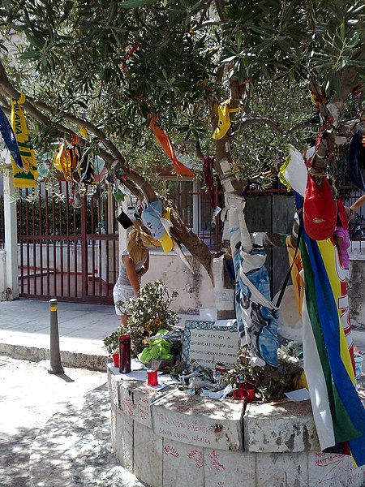

Nella buca lasciata dall’esplosione di Via D’Amelio, per iniziativa della signora Maria Pia Lepanto, mamma del giudice Borsellino, venne piantumata una piantina di olivo proveniente da Betlemme.

Il luogo del'attentato: via d'Amelio a Palermo
.jpg) La volontà di Cosa Nostra di uccidere Paolo Borsellino risalirebbe addirittura ai primi anni '80, quando il magistrato seguiva le indagini sugli assassini del capitano dei carabinieri Emanuele Basile.
La mattina del 18 luglio, Spatuzza e Tutino andarono a comprare da un elettrauto a Corso dei Mille due batterie per auto e un'antennina da collocare sull'autobomba; poi, nel primo pomeriggio, andò a lasciare la Fiat 126 e l'attrezzatura acquistata in un garage di via Villasevaglios. Nello stesso pomeriggio, Spatuzza e Tutino rubarono anche le targhe da un'altra Fiat 126 nella carrozzeria di Giuseppe Orofino a Corso dei Mille e, successivamente, Spatuzza consegnò le targhe a Graviano presso il maneggio dei fratelli Salvatore e Nicola Vitale (mafiosi di Roccella; Salvatore Vitale abitava in via D'Amelio e quindi spiava i movimenti di Borsellino). Sempre nella giornata del 18 luglio, Biondino diede a Ferrante un bigliettino su cui era annotato un numero di cellulare (che risultò essere utilizzato da Cristofaro Cannella) al quale comunicare gli spostamenti di Borsellino e gli diede appuntamento per la mattina successiva.
La volontà di Cosa Nostra di uccidere Paolo Borsellino risalirebbe addirittura ai primi anni '80, quando il magistrato seguiva le indagini sugli assassini del capitano dei carabinieri Emanuele Basile.
La mattina del 18 luglio, Spatuzza e Tutino andarono a comprare da un elettrauto a Corso dei Mille due batterie per auto e un'antennina da collocare sull'autobomba; poi, nel primo pomeriggio, andò a lasciare la Fiat 126 e l'attrezzatura acquistata in un garage di via Villasevaglios. Nello stesso pomeriggio, Spatuzza e Tutino rubarono anche le targhe da un'altra Fiat 126 nella carrozzeria di Giuseppe Orofino a Corso dei Mille e, successivamente, Spatuzza consegnò le targhe a Graviano presso il maneggio dei fratelli Salvatore e Nicola Vitale (mafiosi di Roccella; Salvatore Vitale abitava in via D'Amelio e quindi spiava i movimenti di Borsellino). Sempre nella giornata del 18 luglio, Biondino diede a Ferrante un bigliettino su cui era annotato un numero di cellulare (che risultò essere utilizzato da Cristofaro Cannella) al quale comunicare gli spostamenti di Borsellino e gli diede appuntamento per la mattina successiva.
La strage
Il 19 luglio 1992, alle ore 16:58, la Fiat 126 rubata contenente circa 90 chilogrammi di Semtex-H, telecomandati a distanza (probabilmente da dietro un muretto in fondo alla strada o da un condominio in costruzione nelle vicinanze), venne fatta esplodere in via Mariano D'Amelio al civico 21 a Palermo. Sotto il palazzo in cui all epoca abitava la mamma di Borsellino.
l'agente sopravvissuto Antonino Vullo descrisse così l'esplosione: «Il giudice e i miei colleghi erano già scesi dalle auto, io ero rimasto alla guida, stavo facendo manovra, stavo parcheggiando l'auto che era alla testa del corteo. Non ho sentito alcun rumore, niente di sospetto, assolutamente nulla. Improvvisamente è stato l'inferno. Ho visto una grossa fiammata, ho sentito sobbalzare la blindata. L'onda d'urto mi ha sbalzato dal sedile. Non so come ho fatto a scendere dalla macchina. Attorno a me c'erano brandelli di carne umana sparsi dappertutto.
I colpevoli
L'imputazione si basava sulle dichiarazioni di collaboratori di giustizia già acquisite nei vari processi sulle stragi che si sono celebrati negli anni precedenti: infatti, secondo i collaboratori Vincenzo Sinacori, Francesco Geraci e Giovanni Brusca, nel settembre 1991 Messina Denaro partecipò ad una riunione a Castelvetrano in cui Salvatore Riina comunicò la decisione di dare il via alla strategia stragista, inviando appunto a Roma il boss castelvetranese insieme ad altri mafiosi per uccidere Giovanni Falcone,sempre secondo Sinacori, Geraci e Brusca, lo stesso Messina Denaro avrebbe progettato l'omicidio di Paolo Borsellino mentre questi era Procuratore capo a Marsala.
l'anno successivo il gup di Caltanissetta Marcello Testaquadra dispose il rinvio a giudizio per Messina Denaro con l'accusa di strage; il processo si aprì il 13 marzo dello stesso anno.
Il 20 ottobre 2020 la Corte d'assise di Caltanissetta, presieduta dal giudice Roberta Serio, condannò all'ergastolo Messina Denaro in contumacia per il reato di strage.
PER RICORDARE
Ogni anno l'associazione libera di Palermo si impegna al fin e di portare gli studenti delle scuole, per ricordare queste vicende di terrore che la mafia ha provocato e tutte le sue vittime.
Una città che dopo aver conosciuto in maniera drammatica la violenza mafiosa, vive oggi tempi nuovi che impongono una riflessione sullo stato di evoluzione della criminalità organizzata e che richiedono di interrogarsi sullo stato del movimento antimafia e sulle vie da intraprendere per condurre azioni di contrasto.